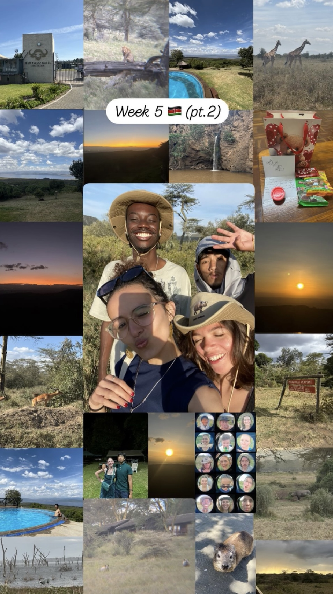
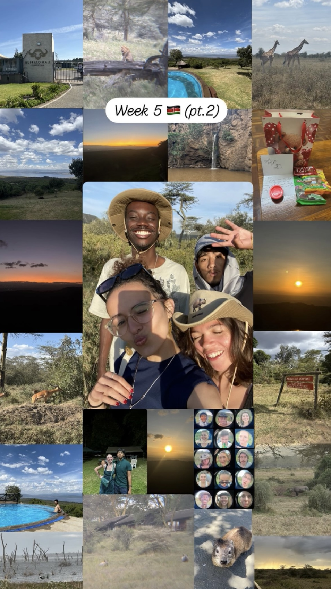
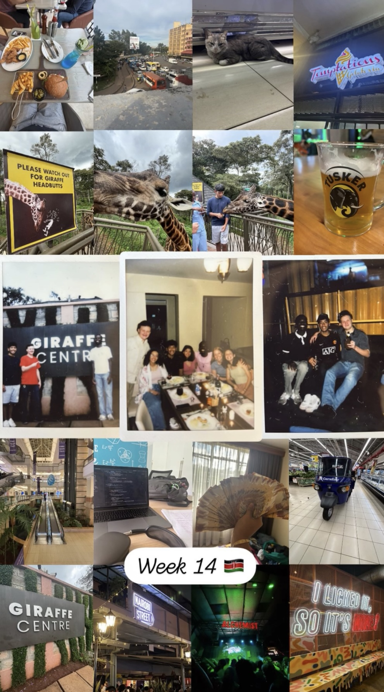
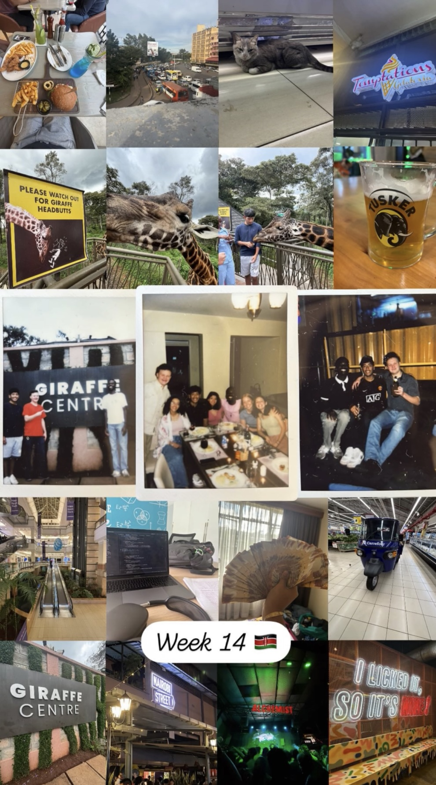
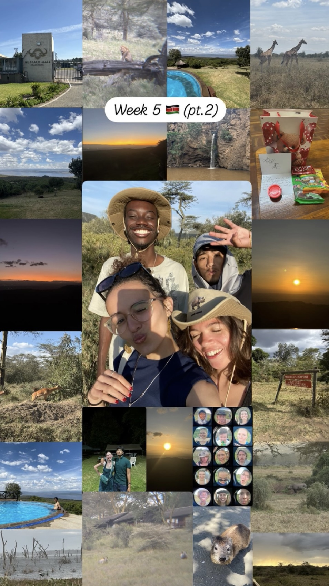
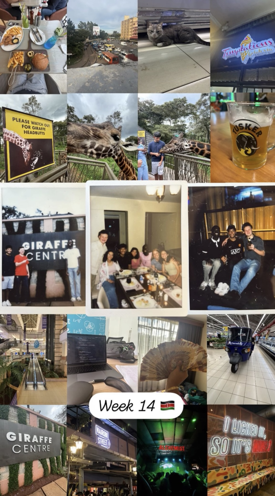
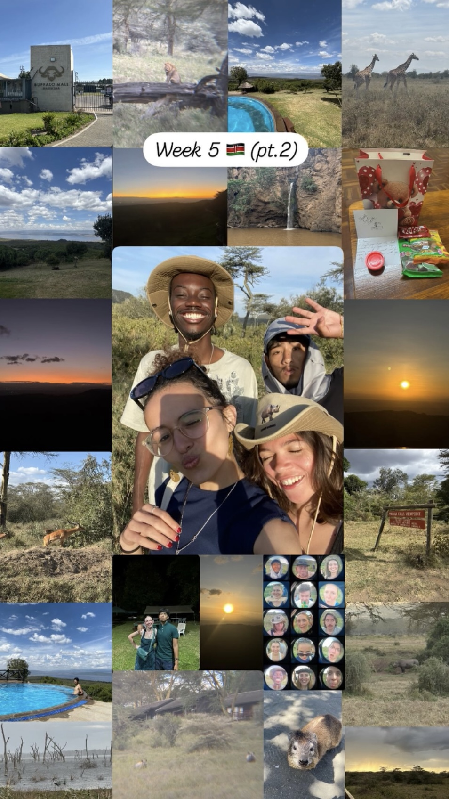
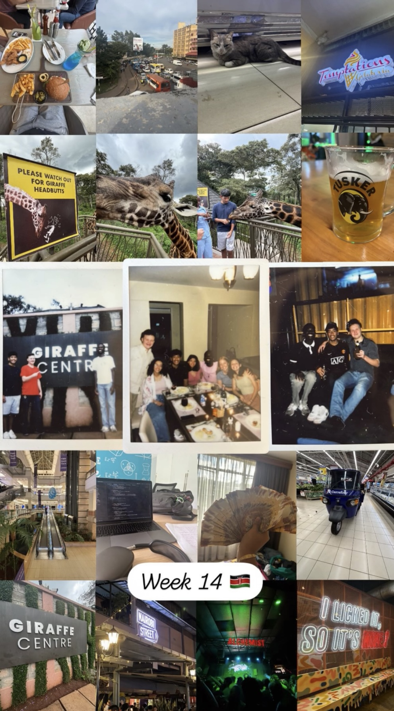

KSP Compound Gallery


 



 



 



The compound quickly became my second home. I will never forget the memories that were made on these grounds. Greeting all the staff workers that live on the premises, the many games of soccer out in the field. All of the birthday parties, late night study sessions, and the wild monkey visits that kept us on our toes doesn't scratch the surface of memories that were created in the compound. The compound is truly a special place that fosters community and lifelong friendships.
“Home is not a place... it’s the people.”
— SLU Kenya Semester Program Student